Configure Authentication via AWS STS and an IAM Role¶
Alation Cloud Service Applies to Alation Cloud Service instances of Alation
Customer Managed Applies to customer-managed instances of Alation
Available from release 2023.3
Overview¶
Use the steps below to configure authentication via the AWS Security Token Service (STS) and an AWS IAM role for Amazon sources cataloged in Alation using Open Connector Framework (OCF) connectors.
You can perform this configuration on:
Customer-managed (on-premise) Alation instances installed on AWS EC2
Alation Cloud Service instances that have not been migrated to the cloud-native architecture
Enterprise Edition of Alation Cloud Service instances (cloud-native architecture)
This configuration will work for the following Amazon sources:
Amazon Athena (Athena OCF connector version 1.2.0.6527 or newer)
Amazon Glue (AWS Glue OCF connector version 1.1.1.6409 or newer)
Amazon Redshift (Redshift OCF connector version 1.3.2.6521 or newer)
Amazon S3 (S3 OCF connector version 3.8.5.6552 or newer)
Important
STS authentication with an AWS IAM role can be configured between different AWS accounts when the Alation instance is deployed under one AWS account and the Amazon resources are running under another AWS account.
This configuration will also work if the on-premise Alation instance and the Amazon resources exist under the same AWS account.
STS authentication with an AWS IAM role does not require a service account (an IAM user) on Amazon resources. The IAM role providing access to the Amazon source will be assumed by the Alation instance.
{kind=link}
Workflow¶
The full configuration includes steps in the AWS IAM user interface, the Alation user interface, and in case of an on-premise instance, on the Alation server. You will need to switch between AWS and Alation to complete all the steps.
You must have the role of Server Admin to configure Alation and an advanced role in AWS that allows creating roles and policies.
Step 2—AWS IAM: Create an IAM Role with Access to Amazon Resources
Step 3—Alation: Create an Authentication Profile and Get the Alation Instance Role
Step 4—AWS IAM: Create a Resource Tag and Define the Trust Relationship
Step 5—AWS IAM: Allow the Alation Instance Role to Assume Another Role
Step 6—Alation: Configure Your Source to Use IAM Role Authentication
Prerequisites¶
AuthService of the Alation instance is up and running (default).
Note
On an on-premise instance, you can check the state of AuthService with the following command, from the Alation shell:
alation_supervisor status java:authserverThe status should be
RUNNING.On-premise instances only—If this has not been done yet for your Alation instance, you must assign it an IAM role allowing the
sts:AssumeRoleaction. See How to Assign an AWS IAM Role to the Alation Instance below for more details.
How to Assign an AWS IAM Role to the Alation Instance¶
Perform these steps under the AWS account where your Alation instance is running.
To assign an AWS IAM role to the instance:
In AWS IAM, create an AWS IAM role selecting the Type of Trusted Entity to be AWS Service and Use Case to be EC2.
Under the Trust relationships tab on the properties page of the role you created, make sure that
"Principal"is set to"Service": "ec2.amazonaws.com"and"Action"is set to"sts:AssumeRole".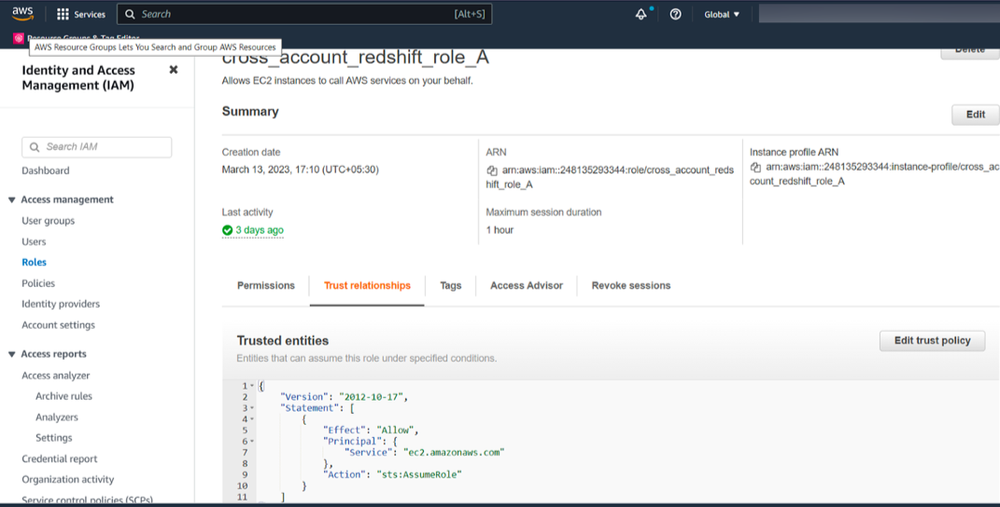Attach this role to the EC2 instance where Alation is running: navigate to EC2, open the properties of an instance, and select Action > Security > Modify IAM Role > Select IAM Role > Update IAM Role. For more information, refer to Attach an IAM role to an instance in AWS documentation.
Step 1—Alation: Start the Connector Access Gateway Service¶
Note
This step is required on customer-managed (on-premise) Alation instances only. If your instance is in the Alation Cloud, skip this step and start with Step 2.
On an on-premise instance, you’ll need to start the Connector Access Gateway (CAG) service that is part of Alation Connector Manager.
To start CAG:
Use SSH to connect to the Alation instance.
Open the /etc/hydra/hydra.toml file for editing. (The path is outside of the Alation shell.)
Add the following lines:
[application_gateway] enabled = true [agent] use_host_networking = true
Important
If any of these sections already exist, you don’t need to add them again.
Example file:
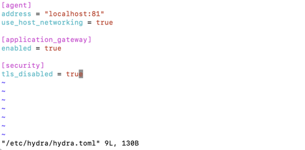Save the changes to the file.
Restart Alation Connector Manager.
sudo systemctl restart hydra
Note
If you installed Docker in rootless mode, in this and the next command do not use
sudo.Validate that CAG is now running.
sudo docker ps
The output should show the
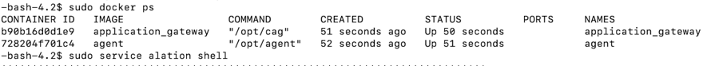agentandapplication_gatewayservices to be running:Enter the Alation shell.
sudo /etc/init.d/alation shell
Modify the following alation_conf parameters:
alation_conf alation.ocf.cag.port -s 11000 alation_conf alation.ocf.cag.alation_url -s localhost:80
For more information about alation_conf, see Using alation_conf.
Exit the Alation shell.
exit
Step 2—AWS IAM: Create an IAM Role with Access to Amazon Resources¶
Perform this step in AWS IAM of the AWS account where your Amazon resources are running:
Create an IAM policy that grants access to the source you are going to connect to from Alation. Further in this instruction we’ll refer to this policy as
<read-resources-policy>. The policy must fulfill the access requirements for extraction, profiling, and query log ingestion from an Amazon source you are creating this configuration for. Refer to the corresponding OCF connector documentation for recommendations as to what kind of access to give.Note
You can also use an existing policy if it fulfills the access requirements for a source.
Create an AWS IAM role, for example,
<access-to-resources-role>. Further in this instruction we’ll refer to this role as<access-to-resources-role>.Attach the
<read-resources-policy>to the<access-to-resources-role>.In the Summary section of the role properties page, locate the Maximum session duration value. Take a screenshot or write the value down. You will need it for reference in the configuration steps that follow.
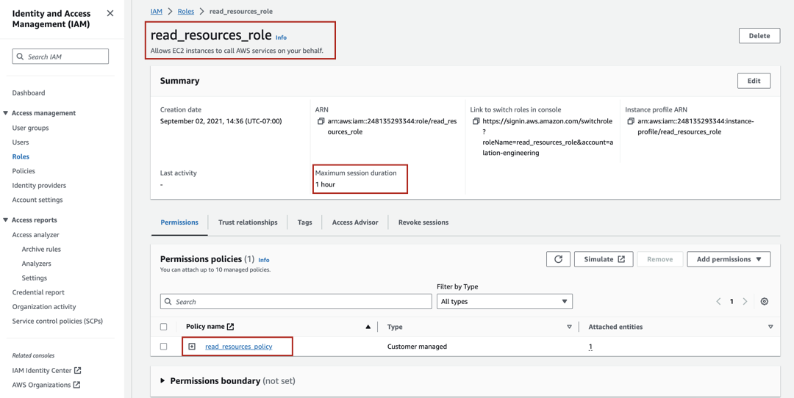Note
If you expect that extraction from your source may take more time than the current maximum session duration and if your AWS security policy allows it, you can change this value to a greater value to avoid frequent token regeneration. For details, refer to Modifying a role maximum session duration (console) in AWS documentation.
Step 3—Alation: Create an Authentication Profile and Get the Alation Instance Role¶
Perform this step in Alation:
Log in to Alation.
Go to Admin Settings > Server Admin > Authentication.
Under Authentication Configuration Methods for External Systems, click the Add Configuration button.
In the list that opens, select AWS_IAM. The AWS_IAM authentication profile editor will open in a new browser tab.
Add these values:
Config Name—Provide a name for the profile you are creating. The name is required for you to identify it among all other existing methods and manage its settings.
STS Duration—Provide the STS token duration in seconds. The value should be less than or equal to the maximum session duration of the IAM role that provides access to the Amazon resource(s). (See Step 2).
Region—Provide the AWS region of the AWS account where the Amazon resources are running.
Cred Type—Select the value
instance_profile.SAML authenticate request XML—Leave clear.
Multi role flow—Leave this checkbox selected (default).
Encode Relay State—Leave clear.
Redirect URI—Leave clear.
Entity Id—Leave clear.
Token Buffer time—Leave clear.
Note
For more information on each field, refer to Authentication Configuration Methods for External Systems: AWS IAM.
Click Save.
Click the Get Alation Role ARN button to fetch the role ARN of Alation’s EC2 instance.
Note
Alation calls the AWS GetCallerIdentity endpoint which returns the Role ARN attached to the instance.
A pop-up will appear with the role ARN. Click the Copy to clipboard button to copy the role ARN.
Note
For an on-premise instance, this will be the ARN of the role you assigned to the instance.
Save the ARN in a secure location. You will need it during other configuration steps.
Click Close to close the pop-up.
Step 4—AWS IAM: Create a Resource Tag and Define the Trust Relationship¶
Perform this step in the AWS IAM user interface under the AWS account where your Amazon resources are running and where you created the role providing access to Amazon resources (Step 2, <access-to-resources-role>).
You will need to define a tag and modify the trust relationship on this role.
Prepare the ARN of the Alation instance role. This is the ARN you saved as the result of Step 2. From the ARN, you can find out the name of the instance role: it’s the value that comes after the forward slash after the numeric ID. For example, if the ARN looks like this:
arn:aws:iam::248135293344:role/test_instance_role, thentest_instance_roleis the name of the role.In AWS IAM, under the AWS account where your Amazon resources are running, open your
<access-to-resources-role>.Select the Tags tab.
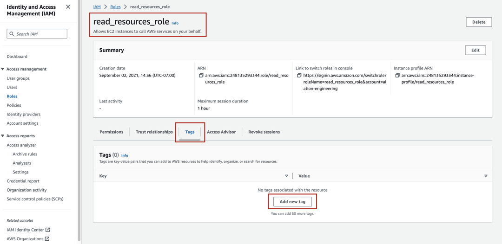Click Add new tag or Manage tags to create a new tag. The Tags page will open.
Click Add new tag.
In the Key field, provide a name for the tag, for example
AlationStsAssumeRoleName.In the Value field, enter the name of the Alation instance role.
Click Save changes to save the tag. The tag will be displayed in the Tags table on the Tags tab of the role properties page.
Copy the tag key and save it in a secure location. You will need it for the next configuration step.
Click on Trust relationships and then on Edit trust policy.
Click on the Add button next to Add a principal.
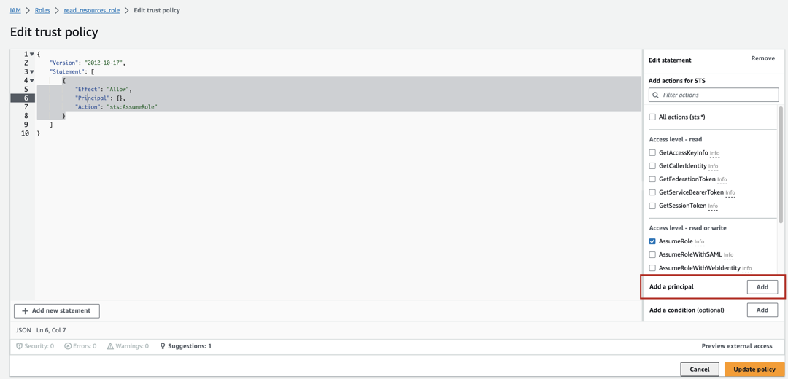Click on the Principal type dropdown and select IAM Roles as the principal type since we want to allow another IAM Role to assume this role.
Provide the ARN of the other role that will be allowed to assume this role. This should be the ARN of the Alation instance role that you prepared (see item 1 in this Step).
After providing the ARN, click Add principal.
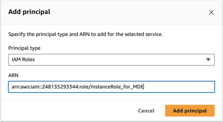You will see that in the trust policy JSON, the ARN of the instance role is reflected under the Principal object.
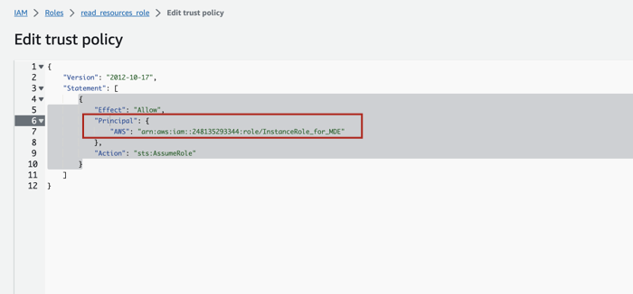Next, we’ll define an External ID for this trust relationship. Click the Add button next to Add a condition.
Note
External ID configuration is an optional but recommended step that can help avoid the “confused deputy problem”.
Refer to How to use an external ID in AWS documentation for more details.
In the Add condition dialog that opens, click on the dropdown for Condition key.
In the search bar type
externalid. You will see the resultsts:ExternalId. Select it.Click on the Operator dropdown and from the list that opens, select
StringEquals. A new field Value will appear.In the Value field, provide a unique value. The value can be a random string generated by a third party. You can use a site like UUID Generator to generate a value. Do not select the If exists checkbox.
Save the External ID value to a secure location. You’ll need it during one of the next configuration steps.
Click Add condition. You will see the condition added to the policy JSON.
On the Edit trust policy page, click Update policy.
If your Alation instance is an Enterprise Edition of the Alation Cloud Service, go to Step 6.
If your Alation instance is on-premise or an Alation Cloud Service instance that has not been migrated to the cloud native architecture, perform Step 5 and then Step 6.
{kind=link}
Step 5—AWS IAM: Allow the Alation Instance Role to Assume Another Role¶
Note
This step applies if your Alation instance is:
An on-premise instance—Perform this step in the AWS IAM user interface under the AWS account where your Alation instance is running.
An Alation Cloud Service instance that has not been migrated to the cloud native architecture—Contact Alation Support to perform this step for you.
If your instance is an Enterprise Edition of Alation Cloud Service on the cloud native architecture, skip this step and go to Step 6. On this type of instances, the configuration described below is already available by default.
To allow the Alation instance role to assume another role:
Prepare the ARN of the role that provides access to the Amazon resources (Step 2,
<access-to-resources-role>).Prepare the tag key you created in Step 4.
Prepare the ARN of the Alation instance role. This is the ARN you saved as the result of Step 3. From this ARN, you can find out the name of the instance role: it’s the value that comes after the forward slash after the numeric ID. For example, if the ARN looks like this:
arn:aws:iam::248135293344:role/test_instance_role, thentest_instance_roleis the name of the role.Log in to the AWS console of the AWS account where you deployed the Alation instance.
Navigate to the user interface of the AWS IAM service.
Use the ARN of the Alation instance role to find this role and open its properties.
Select the Permissions tab.
Click Add permissions and from the dropdown, select Create inline policy. You should see a screen similar to the following:
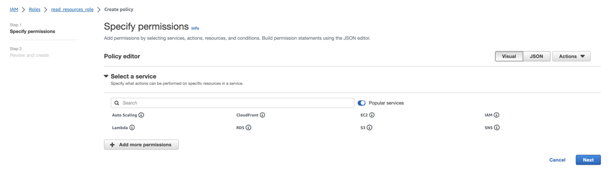Under Select a service, click on the Search field and type STS.
From the list of services that appears, select STS.
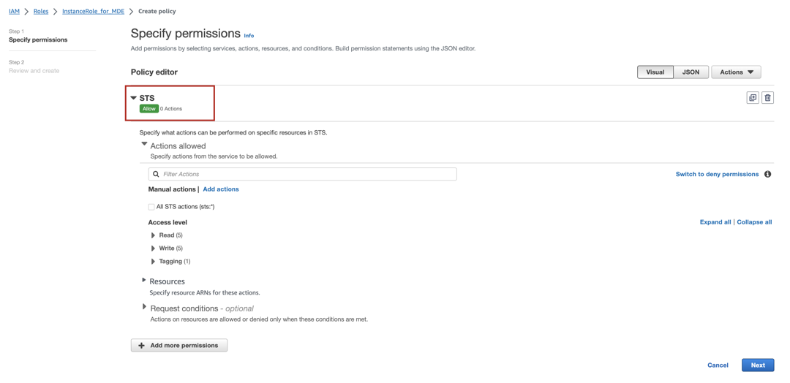In the search field under Actions allowed, type assume. You will see a number of results, including
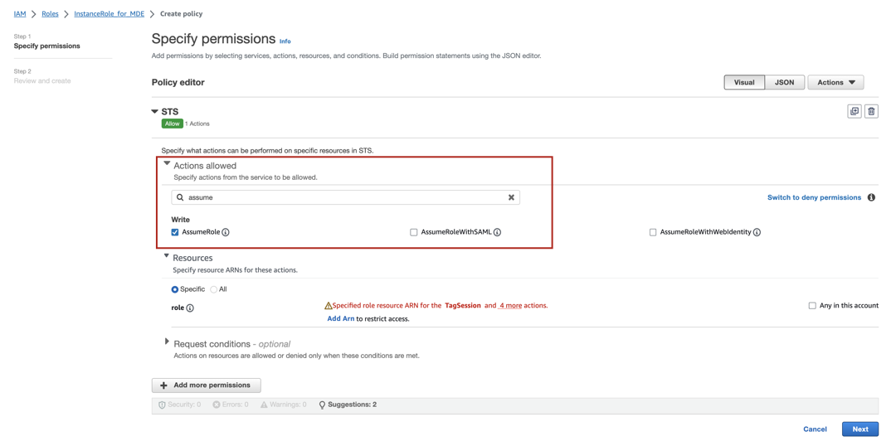AssumeRole. Select the checkbox forAssumeRole.Under Resources, ensure that the radio button for Specific is selected.
Click the Add ARN link.
In the Add ARN(s) dialog that opens, under Resource in, select Other account.
Note
If the Amazon resource you will be connecting to from Alation runs under the same AWS account as the Alation instance, select This account.
Under ARN, provide the ARN of the role that gives access to the Amazon resources (
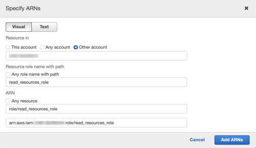<access-to-resources-role>). There is no need to populate other fields. They will be auto-populated after you provide the ARN value.Click the Add ARNs button to save the ARN. You’ll be returned to the policy editor.
Click on Request conditions, and then click Add another condition.
The Add request condition pop-up will open. Click on the dropdown for the Condition key.
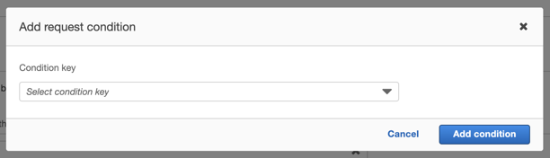From the list of condition keys, select
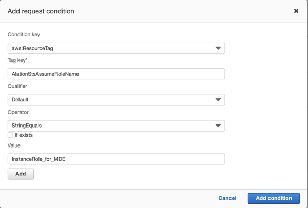aws:ResourceTag. More fields will appear.In the TagKey field, provide the tag key you created in Step 4.
Click on the dropdown for Operator and from the list, select
StringEquals. This will add the Value field. Leave the If exists checkbox clear.Populate the Value field with the name of the Alation instance role you retrieved in Step 3.
In the dialog, click Add condition. You’ll return to the policy editor.
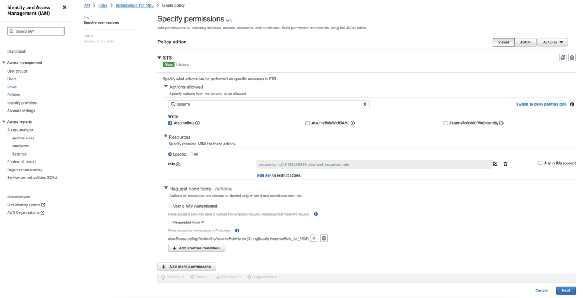Click Next. The Review and create screen will open.
Provide the Name for the policy and then click Create policy to create it. You will see your policy in the Permissions policies table.
{kind=link}
{kind=link}
{kind=link}
Step 6—Alation: Configure Your Source to Use IAM Role Authentication¶
Prepare the information you collected from your AWS configuration:
Use the information in the relevant OCF connector documentation to configure authentication with the IAM Role. You will need to provide the values listed above on the General Settings tab of the settings page of an Amazon source: